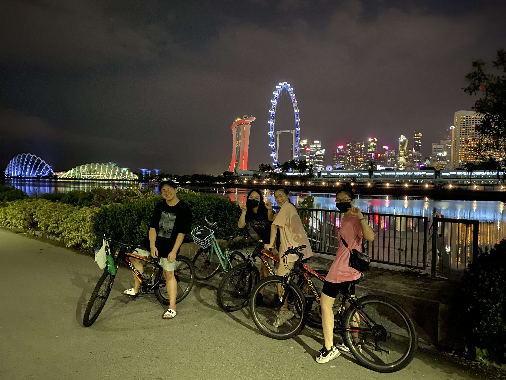
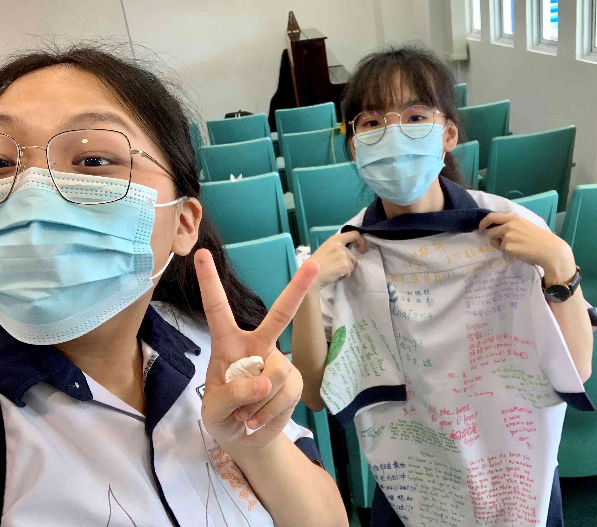

A story back then
Imagine walking onto a plane and travelling for three hours across the ocean alone to study in a completely different place than you have lived your entire life. Well, that was something that I experienced about three years ago. Four years ago, I was still an ordinary ninth-grade student in Vietnam preparing for my graduating exam. I was perplexed about my future with depression; I was sure that I would perform well in my upcoming national examination. Although I got a relatively high grade in my national examination, I decided to begin my adventure to Singapore by sitting for the Admissions Exercise for International Students (AEIS) after graduating from ninth grade in Vietnam. This exam is competitive as it only allows a limited number of international students to get into a Singapore local school. Eventually, I failed to pass the exam, so I decided to enrol in a private secondary school in Singapore since I was able to take the GCE-O level in the end.
At first, I thought it might be a terrible experience in my life, but it turns out to be one of the most memorable experiences in my life - especially last year when I was in secondary four. In my secondary school days, I had the privilege of interacting with students from different backgrounds and making many memories alongside each other. I met many close friends who shared the happiness and sadness, ups and downs with me.
"self-belief and hard work will always earn you success"
As international students, although we came from different backgrounds, most of us have a common goal: to pass English. Unlike other local students, English is not our first language. English had been the most concerning subject for me. Indeed, tuition became a necessity for me. I attended three to four English tuition classes every week in the two years I spent in secondary school. However, I still struggled to pass my English end-of-year examination as well as my preliminary examination. I worked even harder with a leap of hope that I would pass the GCE-O level examination. Besides English, I spent much time on subjects like History and Biology as well. Memorising a substantial amount of knowledge has never been an easy task for me. Last year, it became worse with the Covid-19 pandemic; we were having online lessons - home-based learning (HBL) instead of face-to-face classes. Having online lessons seemed no that efficient for me, but fortunately, it did not affect the GCE-O level examination much.
We were able to come back to school for physical classes after two to three months of having online lessons. The closer to the examination, the more time I spent studying and the more hard-working I am. I would like to describe that period as a painful but joyful journey. I suffered a lot from study pressure physically and psychologically as I had to give up all my hobbies and spend all my leisure time doing examination papers. At the same time, I also had a wonderful time with my classmates and friends who studied and accompanied me throughout the journey. Due to the pandemic, I received my GCE-O level online while I was back in Vietnam. The moment that I had impatiently waited for arrived, I finally saw my result slip; I was in a daze when I got a B3 for my English. That was a great moment of pride for my parents and me. This result might be an ordinary one to some, but for me, it is what I have always dreamed of. I have to say that this would not have happened without the hard work, encouragements of my teachers and friends and prayers of my parents.
| English | Mathematics | Additional Mathematics | Sciences (Chem,Bio) | Principles of accounts | History | Physics |
|---|---|---|---|---|---|---|
| B3 | A1 | A1 | A1 | A2 | B3 | B3 |
Another story back then
People make choices every second of every day. The choices we make may bring about a positive or negative outcome. After receiving such an unexpected result, I was torn between two choices, Polytechnic or Junior Colleges. I was unsure what I would do at the end of this educational journey, but I leaned towards Poly. I know that I am always interested in coding, and being able to pursue what I want is something that means much to me. Moreover, polytechnic allows the students to get a taste of that university as we are doing more projects than examinations.
However, with my O-level grades, my family wanted me to continue my study in JC. Indeed, I know that the chance to get into a local university in Singapore is higher when I attended a JC, but that is only if I perform well in the A-level examination. I also did much research on these two different paths, and I knew that I have to achieve an outstanding GPA in polytechnic to get into a local university. I am a decisive person, I rarely spend much time making a decision, but I spent two nights thinking about it this time. As a result, I do not want to leave any regrets in the future, and I believe doing what one wants is genuinely a privilege. It is a say that none of us knows what will happen tomorrow then it is more important to living as happily as we can. I do not know if the polytechnic suits me, but I know that I will regret it if I do not go for poly. Looking back, I have no regrets as I am enjoying my polytechnic life.